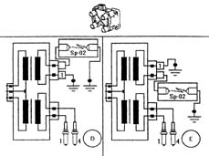

5510CC IGNITION COIL OPERATION CHECK
- Path
- Test > 55 ELECTRICAL EQUIPMENT > 5510 ENGINE IGNITION > 5510C COIL, ECU, SENSORS > 5510CC IGNITION COIL OPERATION CHECK
- Kind
- test / check procedure
- Applies to
- engines: 2.0 16V; all production periods; only with equipment: BIPOWER and GPL
- Interactive page
- https://sloeber94.github.io/elrnDB-fDct/en/#/244000580
Applies to: engines: 2.0 16V; all production periods; only with equipment: BIPOWER and GPL
The special equipment must be used for this test.
Description | Code | Function | |
|---|---|---|---|
. | Spark gap kit | 1.806.369.000 | Coil test |
Make sure that the ignition key is in the OFF position.
Disconnect the two spark plug leads for one of the two coils from the HT outlet.
Applies to: engines: 2.0 16V; all production periods
Applies to: engines: 2.0 16V; all production periods; only with equipment: BIPOWER and GPL
Fit the spark gap (SP-02) between one of the two HT outlets and earth.
Fit the adaptor cable marked with the code 1 between the other HT outlet and earth.
Make sure that the rubber protective boots for the cables are correctly fitted.
Interrupt the petrol pump supply by disconnecting the fuse.
See E5030 PETROL ENGINE ELECTRONIC MANAGEMENT
Start the engine and make sure that there is a spark between the spark gap points (case D in the figure)
Applies to: engines: 2.0 16V; all production periods
It is possible to carry out the test on the coils by activating the Active diagnosis for the coils using the Examiner and listening for the clicking of the H.T. sparks operated by the diagnostic equipment.
Applies to: engines: 2.0 16V; all production periods; only with equipment: BIPOWER and GPL

Carry out the same test again reversing the connections (case E in the figure.
Carry out the test described on the second coil